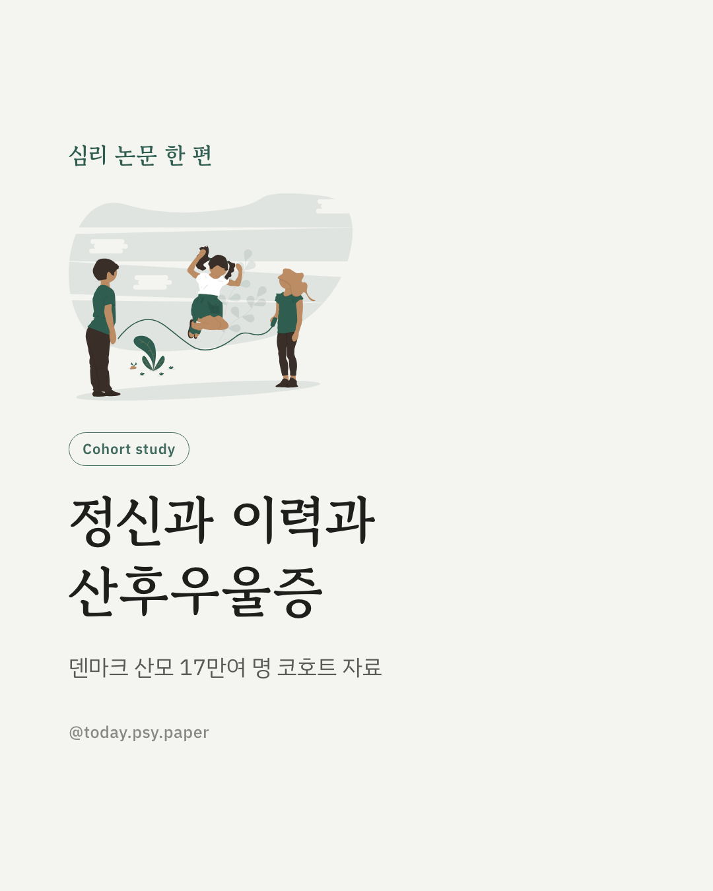
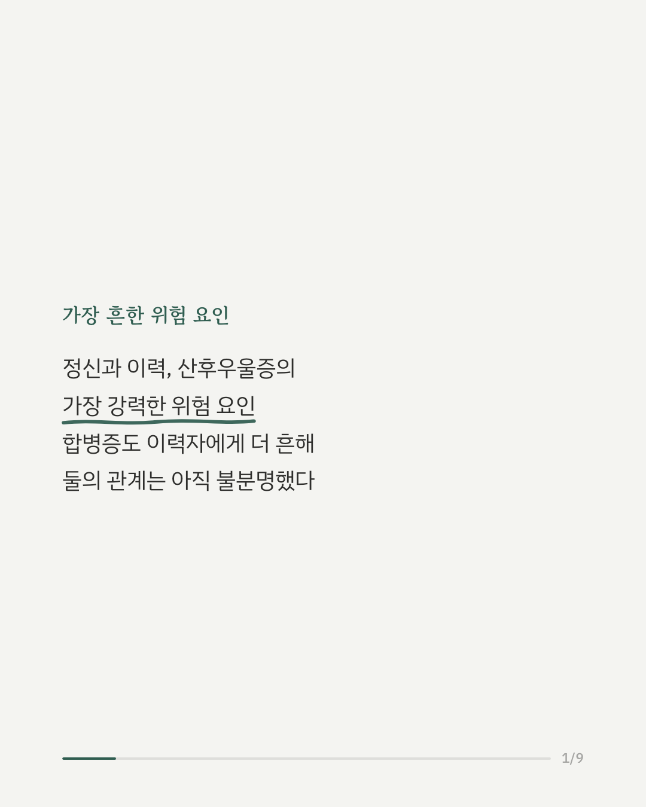
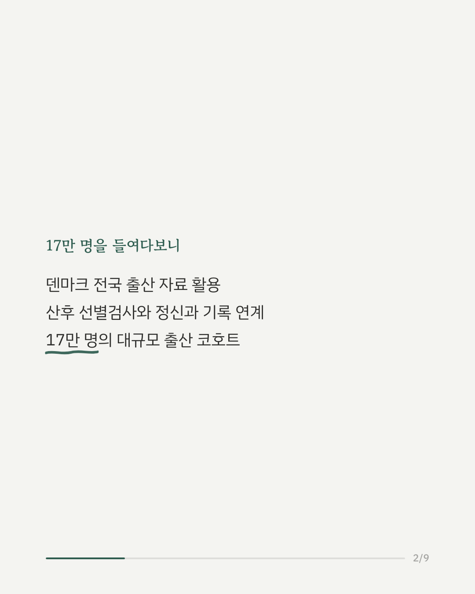
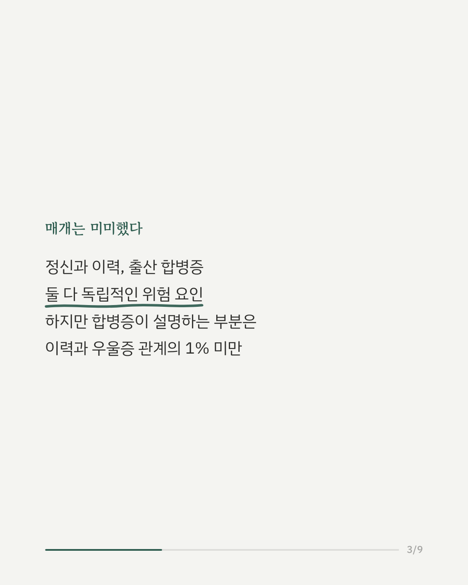
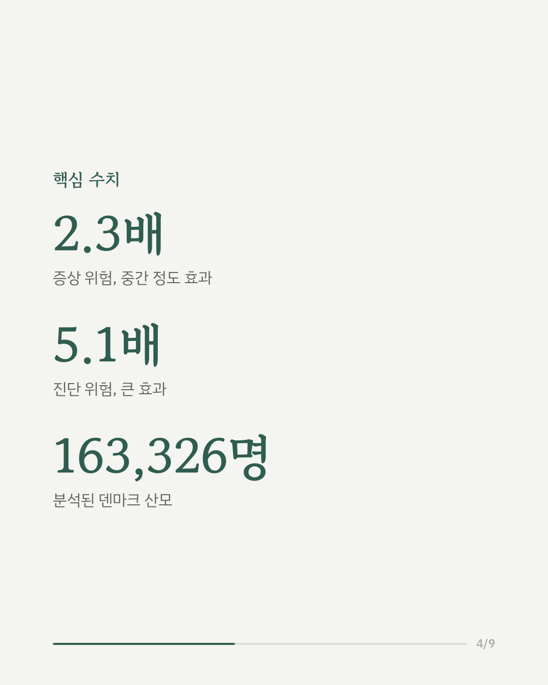
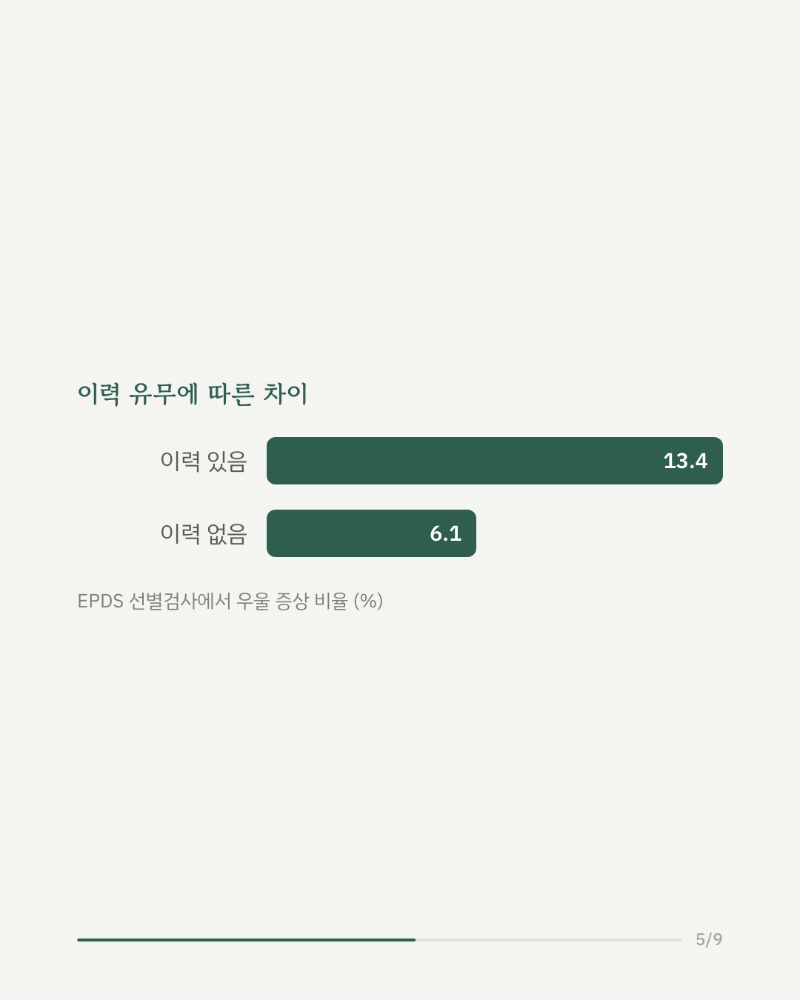
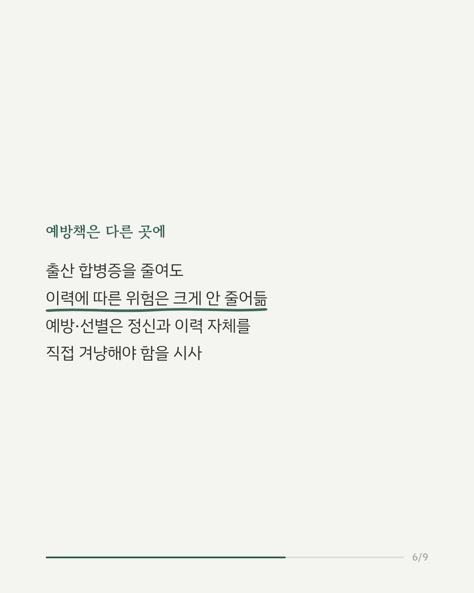
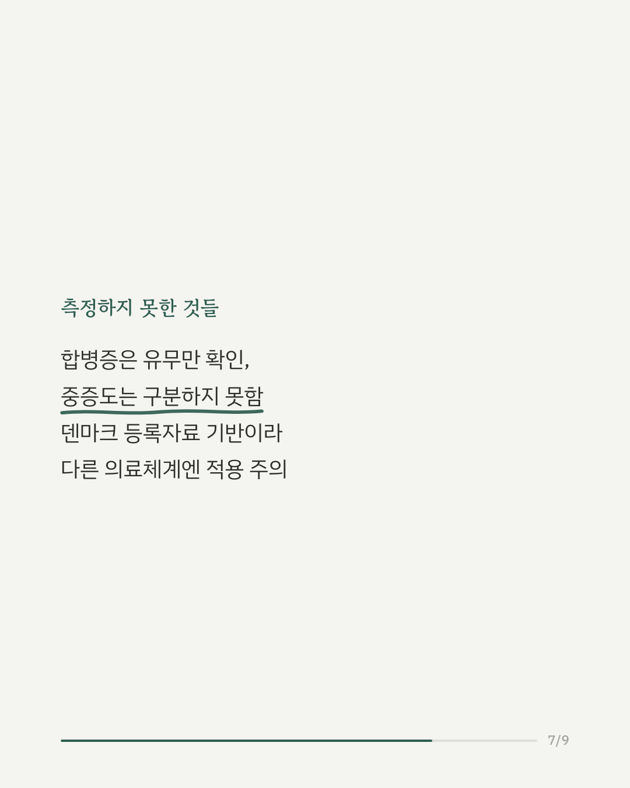
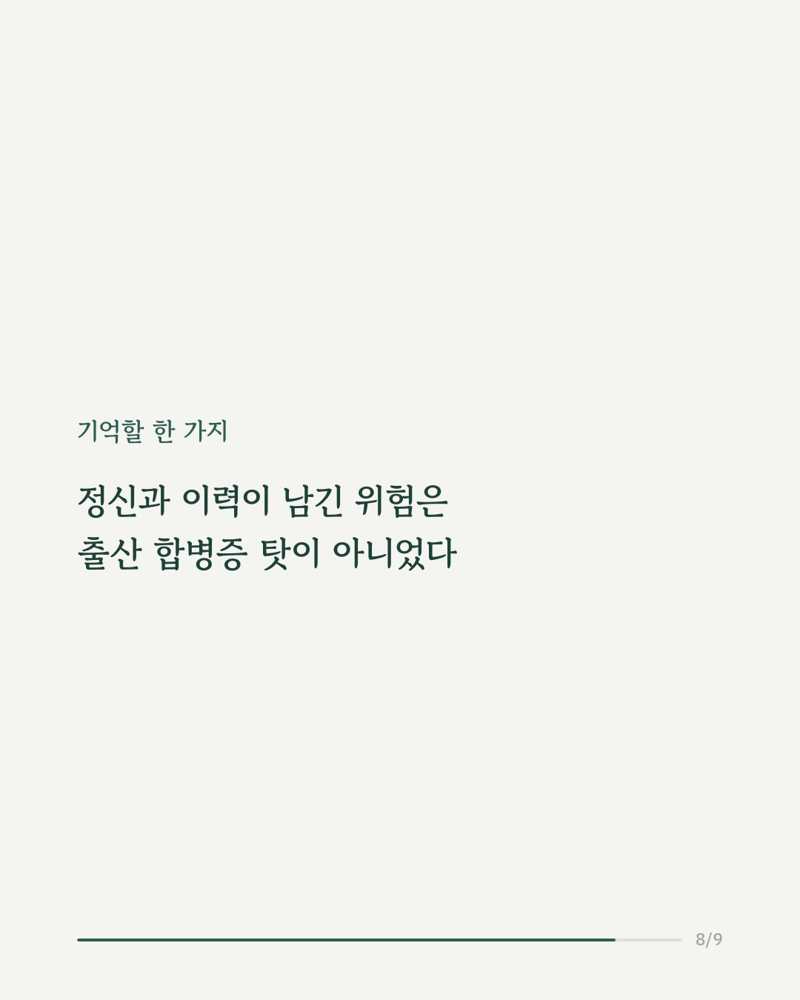
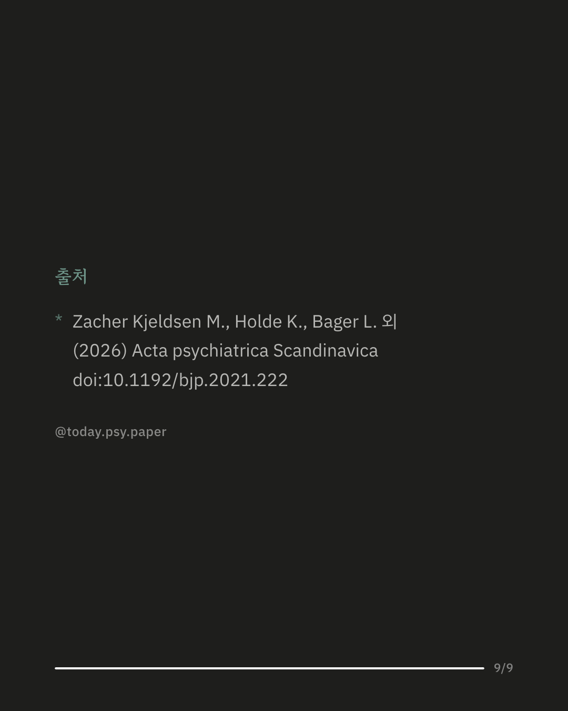

산후우울증은 출산 후 여성에게 흔히 나타나는 정신건강 문제로, 정신과 이력이 있는 경우 위험이 크게 높아지는 것으로 알려져 있습니다. 그런데 정신과 이력이 있는 여성은 출산 중 합병증도 더 자주 겪는다는 점에서, 합병증이 두 요인을 잇는 매개 고리는 아닐까 하는 질문이 제기됐습니다. 덴마크 산모 163,326명의 출산·의료 등록자료를 연계 분석한 결과, 정신과 이력이 있는 여성은 산후우울증 증상 위험이 2.3배, 진단 위험이 5.1배 높았습니다. 출산 합병증 역시 독립적인 위험 요인이었지만, 합병증이 정신과 이력과 산후우울증 사이의 관계를 설명하는 비율은 1%에도 미치지 못했습니다. 즉 정신과 이력이 산후우울증으로 이어지는 경로는 출산 중 겪는 신체적 합병증을 거치기보다, 대부분 직접적인 경로로 나타났습니다. 이는 산후우울증 예방과 선별이 출산 관리보다 정신과 이력 자체를 겨냥해야 한다는 점을 시사합니다. 다만 이번 연구는 덴마크 등록자료를 기반으로 했고, 합병증의 중증도까지는 구분하지 못했습니다. 출처: Acta Psychiatrica Scandinavica (2026), 'Psychiatric History and Postpartum Depression: The Mediating Role of Obstetric Complications' #산후우울증 #정신과이력 #모성정신건강 #임상심리 #정신건강정보 #심리학연구 #논문리뷰
python3 publish.py 42087350